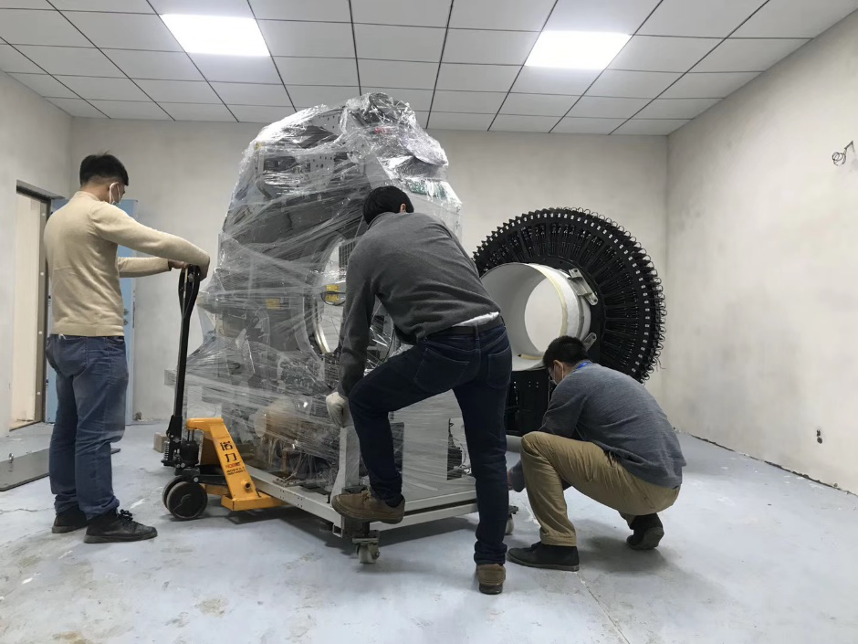
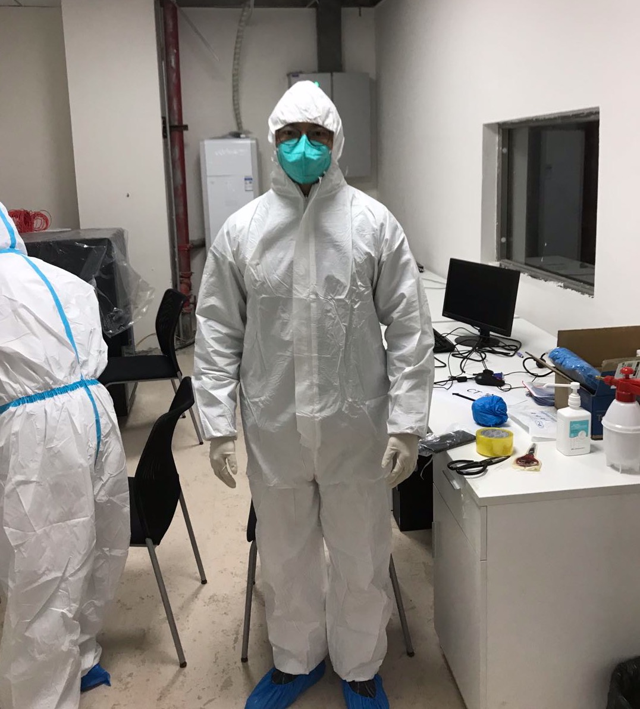

Zhang Bo won the title of "National Upward Better Youth" in 2020
Source: School of Life Sciences and Technology, Huazhong University of Science and Technology
(Contributor Yang Ya and Li Dufeng) On the occasion of Youth Day, the Communist Youth League Central Committee and the All-China Youth Federation jointly awarded the 24th 'China Youth May Fourth Medal' to outstanding young role models. At the same time, the Communist Youth League Central Committee announced the list of 'National Role Models for Progressiveness and Virtue in Youth', with our doctoral student Zhang Bo being selected as a 'Model for Diligent Study and Advancement'.
Zhang Bo is a PhD student in Biomedical Engineering at our university. He has won the national gold award in the 'Internet+' Innovation and Entrepreneurship Competition, and received the May 1st Labor Medal of Hubei Province.As a core member, Zhang Bo completed the full-digital PET project which was selected as one of the top ten scientific achievements in China for 2019 by academicians. During the pandemic, his team provided medical imaging equipment and technical support to hospitals in Ezhou, fighting on the front lines without rest for 35 consecutive days.
On February 23rd, the government of Ezhou informed a designated hospital that it was short of imaging equipment. Upon learning this information, Zhang Bo led his team to rush to Ezhou overnight. After two nights with less than three hours of sleep each night, they successfully installed and delivered the medical imaging equipment within 48 hours. The team continued to support frontline medical staff in scanning patients until March 19th when the last patient was discharged.
Professor Xie Qingguo, Zhang Bo's PhD advisor and the inventor of digital PET, led Zhang Bo and his team in developing clinical full-digital PET/CT high-end medical equipment. In 2018, this equipment received approval for innovative medical device special review procedures from the National Medical Products Administration (NMPA), and obtained a Class III medical device registration certificate from NMPA in May 2019, securing market access qualifications. At the beginning of 2020, the first set of equipment was sold and installed, focusing on serving public health.

The 'National Role Models for Progressiveness and Virtue in Youth' selection activity has been ongoing since October 2014, receiving enthusiastic participation from the public. Since its promotion this year, it has garnered widespread attention across society, especially during the fight against COVID-19 where many outstanding young role models emerged. The Communist Youth League Central Committee received recommendation applications for 10,288 good youth from all walks of life across the country. Participation in learning, sharing, and liking reached a total of 21.1434 million times, ultimately determining a list of 150 'National Role Models for Progressiveness and Virtue in Youth' across five categories: dedication to work, innovation and entrepreneurship, diligent study and advancement, poverty alleviation and assistance, and moral integrity.
Below is the CCTV news video report: